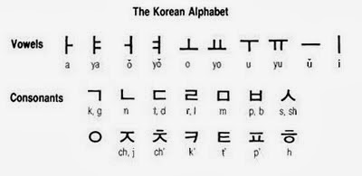
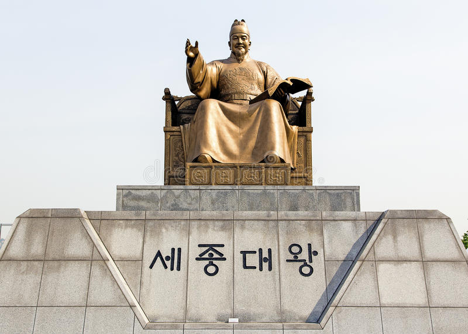

El alfabeto coreano o hangul es el alfabeto nativo coreano.Antes de crearse el hangul, la lengua coreana no tenía alfabeto propio. Por más de mil años, los coreanos cultos escribían su idioma utilizando caracteres chinos. Con el transcurso del tiempo se hicieron varias tentativas para idear un sistema de escritura mejor. No obstante, como todos esos proyectos se basaban en caracteres chinos, únicamente los podía utilizar la gente instruida. El nombre moderno Hangeul es un término acuñado por Ju Sigyeong en 1912, que significa gran escritura en coreano arcaico y escritura coreana” en el moderno.
Las palabras escritas en Hangul están compuestas por sílabas, y éstas constan a su vez de tres partes: un sonido inicial, un sonido medio y por lo general un sonido final.Estos bloques silábicos pueden ser escritos tanto horizontalmente de izquierda a derecha como verticalmente de arriba hacia abajo, las columnas de derecha a izquierda.
El Hangul fue diseñado para que incluso las personas con minima educación pudieran aprender a leer y escribir. Un dicho popular sobre
el alfabeto dice:
"Un hombre sabio puede familiarizarse con el antes de que la mañana termine, un hombre estúpido puede aprenderlas
en un tiempo de diez días."

Figura 1. Caracteres del alfabeto coreano
El Gran Rey Sejong, el monarca más respetado de la historia
Creador del sistema de escritura más ingenioso del mundo
La revista de ciencias Discovery de Estados Unidos elogió este sistema de escritura como el más efectivo de todas las escrituras en uso hoy día. Los celebrados lingüistas Jared Diamond de Estados Unidos y G. Sampson de Gran Bretaña elogiaron esta escritura como la más científica, y un verdadero logro intelectual de la humanidad. Se trata del Hangul, escritura coreana que ha estado en funcionamiento por 564 años.
El Hangul vio la luz en el noveno mes del calendario lunar del año 1446, alumbrando el camino de la multitud a la erudición y a la sabiduría. Este sistema de escritura fue creado por el Gran Rey Sejong, un gobernador sabio que profesó una pasión singular por el bienestar de su pueblo.
Este sistema de escritura hace alarde de una mecánica lógica, simple y racional, además de ser destacar en su originalidad y creatividad, por lo que fue seleccionado como el sistema gráfico más destacado del mundo por la Universidad de Oxford de Inglaterra que cuenta con una de las instituciones más autoritarias en lingüística. Asimismo, en el año 1997 el Hangul fue registrado como Memoria del Mundo de la UNESCO, dejando atrás a escrituras competidoras como el inglés y el japonés.

Figura 2. Sejong el Grande
Fácil de aprender
Uno de los eruditos que colaboró en la creación del alfabeto coreano hangul dijo sobre él: Los cultos pueden aprenderlo en una mañana, y hasta los incultos pueden aprenderlo en diez días. De hecho, algunos de los primeros opositores de ese alfabeto lo llamaron en tono despectivo achimgul, letras de una mañana, pues opinaban que el hangul era demasiado sencillo para ellos, ya que podía aprenderse en una sola mañana.
En todo caso, la facilidad con que se aprende el hangul ha contribuido a que el analfabetismo esté prácticamente erradicado de Corea. Tanto es así que para cuando los niños empiezan a asistir a la escuela, casi todos lo dominan. Es más, en las escuelas coreanas no se hacen concursos de deletreo como en ciertos países, pues el alfabeto hangul representa los sonidos del habla coreana con tanta precisión, que no resulta nada difícil escribirlos correctamente tal como se pronuncian.
El hangul incluso puede utilizarse para escribir palabras que no sean coreanas. ¿Le gustaría probarlo? Aunque las tablas adjuntas no aportan todos los detalles, por lo menos le ayudarán a escribir su nombre en hangul. Así experimentará personalmente la versatilidad del alfabeto que puede aprenderse en una sola mañana.
Las bases de la cultura, el arte y las ciencias de Joseon
El rey Sejong fue ávido lector desde muy temprana edad, hasta leer los clásicos más de cien veces. En el segundo año de su asenso al trono, en 1420, el Gran Rey Sejong fundó el Jibhyeonjeon, instituto central de los estudios académicos de Joseon para reunir y formar estudiosos jóvenes que pudieran proponer nuevas direcciones de las estructuras gubernamentales del reino.
Del trabajo de este instituto surgieron diversos documentos como manuales de agricultura como el Nongsajinseol y textos de medicina tradicional a base de productos naturales autóctonos de Corea como el Hyangyakjipseongbang. Igualmente, se reestructuraron los sistemas de administración, de impuestos y de códigos penales.
El pueblo coreano hacía alarde de una historia de miles de años, pero no contaba con un sistema propio de escritura, por lo que prestaba los caracteres chinos para expresar gráficamente su lenguaje oral. Esto hizo que la lengua escrita fuera privilegio de la nobleza y la clase pudiente, excluyendo la plebe de su uso. Esto no se limitaba a las escrituras eruditas, sino al uso común de la escritura para fines administrativos.
La dificultad de establecer comunicación con el pueblo mediante la escritura hizo que se empezara el proyecto de instituir un nuevo sistema de escritura de acceso fácil para el pueblo. Este proyecto tuvo en cuenta la lengua hablada y mediante símbolos destinados a representar los sonidos básicos del coreano se formularon 28 letras cuya combinación lógica y versátil permite recrear gráficamente el lenguaje hablado.
La empresa de la creación del Hangul se encontró con numerosos obstáculos, principalmente de los eruditos conservadores que temieron enojar a China que controlaba con recelo cualquier movimiento de soberanía y autonomía a su alrededor. Sin embargo, el rey Sejong permaneció firme en su convicción de formular un sistema de escritura propia y original con el fin, no solamente de establecer una conciencia soberana del pueblo, sino también para el uso práctico de una administración eficaz.
Fruto de una voluntad férrea y de un trabajo incesante, se decreta el uso del Hangul en el noveno mes del calendario lunar del año 1446 bajo el nombre de Hunminjeongeum que significa habla propia que instruye al pueblo. Este sistema de escritura mejoró notablemente el nivel de vida del pueblo coreano, desarrollándose hasta establecerse como instrumento de creación y expresión de los valores artísticos y literarios de las masas.
En Corea del Sur se celebra cada año el aniversario de la invención del hangul
Cada año, el día 9 de octubre es festivo en Corea y los coreanos celebran la creación y divulgación de su sistema de escritura. Éste les permitió por primera vez sentirse libres de la influencia de potencias extranjeras y les dio la herramienta necesaria para que todo el pueblo pudiera al fin comunicarse por escrito en su propio idioma.